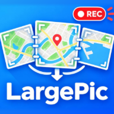

地図アプリなどを画面収録しながら縦横にスクロールするだけ。自動で認識してつなぎ合わせます。
撮影のコツを見る
不足部分の追加撮影：撮影を始めたら、まず取り込み済みの場所を1〜2秒映してください（位置を認識します）。そこから赤い斜線の場所へスクロールします。拡大率は前回と同じにしてください。
くわしい撮影のコツ
検索バー・ボタン・タブなどスクロールしても動かない部分を、青い枠の外に出してください（枠の辺をドラッグ）。
作業内容はこの端末の中に自動保存されます（外部には送信しません）。
前回の作業が保存されています。続きから再開しますか？